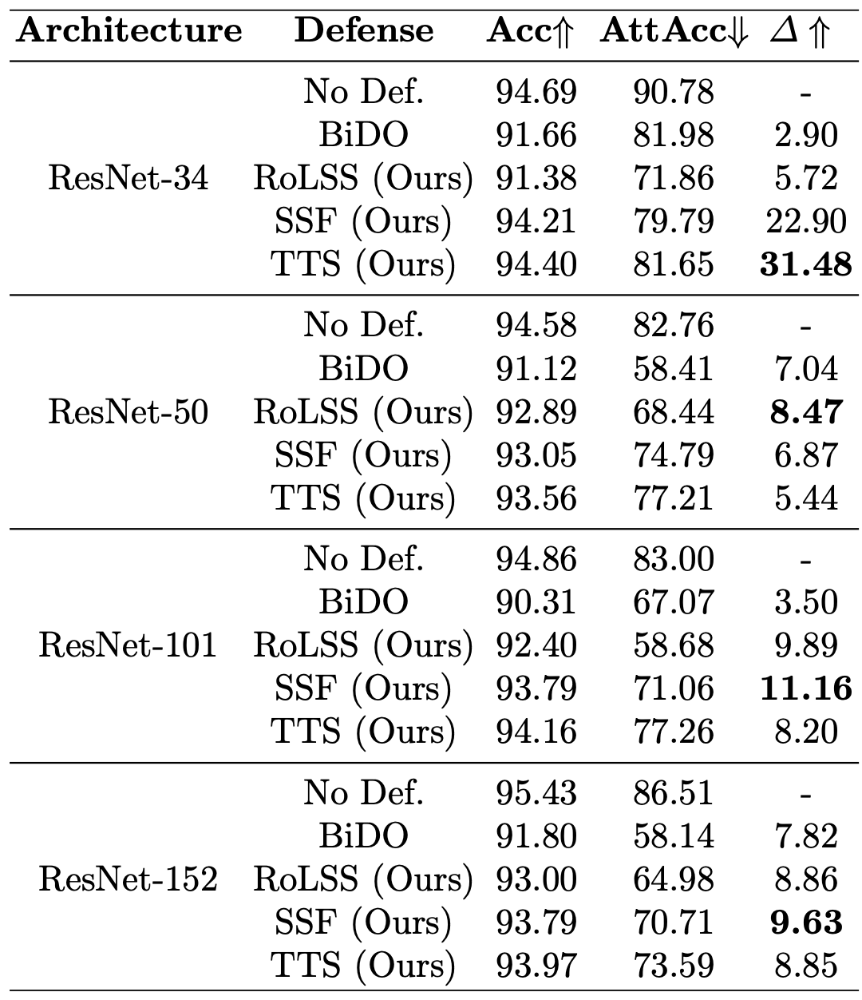

Figure 1. (I) MI attack on a ResNet-like architecture exploits gradient backpropagation via skip connections. (II) Skip connections allow gradients to bypass residual modules, reinforcing MI attacks. (III) Our stage-wise skip connection removal study validates this hypothesis. (IV) Results consistently show that removing last-stage skip connections (RoLSS) causes the most degradation in MI attack accuracy — for both additive (ResNet) and concatenative (DenseNet) skip connections.
Abstract
Skip connections are fundamental architecture designs for modern deep neural networks (DNNs) such as CNNs and ViTs. While they help improve model performance significantly, we identify a vulnerability associated with skip connections to Model Inversion (MI) attacks — a type of privacy attack that aims to reconstruct private training data through abusive exploitation of a model.
In this paper, as a pioneer work to understand how DNN architectures affect MI, we study the impact of skip connections on MI. We discover that: (1) skip connections reinforce MI attacks and compromise data privacy; (2) skip connections in the last stage are the most critical; (3) RepVGG — an established approach to remove skip connections at inference time — cannot mitigate this vulnerability; and (4) based on our findings, we propose MI-resilient architecture designs for the first time. Without bells and whistles, our methods outperform SOTA defense methods in MI robustness and are complementary to existing defenses.
Four Discoveries on Skip Connections and MI
Skip Connections Reinforce MI Attacks
During MI inversion, skip connections enable gradient components (∂L/∂zi+1) to bypass residual modules and propagate more effectively. Removing them consistently degrades MI attack accuracy across all tested architectures (ResNet, DenseNet, MaxViT, EfficientNet).
Last Stage is the Critical Bottleneck
Removing skip connections from the last stage (Stage 4) causes by far the greatest drop in MI attack accuracy — up to 70.38% for DenseNet-169. Degraded gradients in the last stage permeate all earlier stages, amplifying the effect across the whole network.
RepVGG Cannot Mitigate the Vulnerability
RepVGG converts training-time skip connections into a plain inference-time architecture. However, we prove analytically and empirically that the gradients in both architectures are mathematically identical — making RepVGG ineffective as a privacy defense.
Removing Skip Connections Increases MI False Positives
Skip connection removal does not prevent MI optimization from converging to high-likelihood latent vectors — but those vectors increasingly correspond to false positives that do not resemble private training data, explaining the attack accuracy drop.
Stage-wise Skip Connection Removal Study
We design controlled experiments that isolate the effect of skip connections on MI by removing them from individual stages while keeping all others intact. Each modified architecture is trained under identical conditions to the unaltered baseline, with comparisons made at matching natural accuracy checkpoints.

Figure 3. Additional validation across ResNet-34/50/152, DenseNet-161/169/201, EfficientNet-B0, and MobileNet-V2. In all cases, removing skip connections from the last stage (RoLSS) causes the most significant drop in MI attack accuracy — for both additive and concatenative skip connection types.
MI-Resilient Architecture Designs
Our findings directly motivate three simple, architecture-level defense strategies. All maintain the same training procedure as the original model, require no additional data, and are complementary to existing regularization-based defenses (e.g., BiDO).
RoLSS — Removal of Last Stage Skip-Connection
Remove skip connections only from the final stage of the target network (the most critical for MI). No additional hyperparameters. Works for both additive (ResNet) and concatenative (DenseNet) skip connections. Achieves highly competitive MI robustness vs. SOTA defense BiDO — e.g., ResNet-101: AttAcc drops from 83.00% to 58.68% while natural accuracy improves by 2.09%.
SSF — Skip-Connection Scaling Factor
Introduce a learnable scale factor 0 ≤ k ≤ 1 on the last-stage skip connection: zi+1 = gi(zi) + k·zi. At k=0 this recovers RoLSS; at k=1 it is the original network. With k=0.2 (additive) or k=0.01 (concatenative), SSF recovers natural accuracy while maintaining strong MI robustness — e.g., DenseNet-201: only ~1% accuracy drop but ~12% AttAcc reduction.
TTS — Two-Stage Training Scheme
Stage 1: Train with full skip connections for M epochs to warm-start parameters. Stage 2: Remove last-stage skip connections (RoLSS) and continue for N epochs using Stage 1 weights as initialization (M=5, N=95). Inspired by transfer learning, TTS further recovers accuracy while preserving competitive MI robustness — outperforming BiDO across all ResNet variants.
Comparison Against SOTA MI Defenses
Results under PPA attack (Dpriv = FaceScrub, Dpub = FFHQ). Δ = ratio of attack accuracy drop to natural accuracy drop — higher is better. Our methods consistently outperform SOTA BiDO with no extensive hyperparameter grid search.
| Architecture | Defense | Acc ↑ | AttAcc ↓ | Δ ↑ |
|---|---|---|---|---|
| ResNet-34 | ||||
| ResNet-34 | No Defense | 94.69 | 90.78 | — |
| ResNet-34 | BiDO | 91.66 | 81.98 | 2.90 |
| ResNet-34 | RoLSS (Ours) | 91.38 | 71.86 | 5.72 |
| ResNet-34 | SSF (Ours) | 94.21 | 79.79 | 22.90 |
| ResNet-34 | TTS (Ours) | 94.40 | 81.65 | 31.48 |
| ResNet-101 | ||||
| ResNet-101 | No Defense | 94.86 | 83.00 | — |
| ResNet-101 | BiDO | 90.31 | 67.07 | 3.50 |
| ResNet-101 | RoLSS (Ours) | 92.40 | 58.68 | 9.89 |
| ResNet-101 | SSF (Ours) | 93.79 | 71.06 | 11.16 |
| DenseNet-121 | ||||
| DenseNet-121 | No Defense | 94.67 | 78.09 | — |
| DenseNet-121 | RoLSS (Ours) | 86.86 | 24.48 | 6.86 |
| DenseNet-121 | SSF (Ours) | 91.73 | 56.32 | 7.35 |
RoLSS+BiDO is complementary: BiDO+RoLSS on ResNet-101 achieves AttAcc 41.44% (vs. BiDO alone: 67.07%), with only a 1% additional accuracy drop.
Citation
@article{koh2024vulnerability,
title = {On the Vulnerability of Skip Connections to Model Inversion Attacks},
author = {Koh, Jun Hao and Ho, Sy-Tuyen and Nguyen, Ngoc-Bao and Cheung, Ngai-Man},
journal = {arXiv preprint arXiv:2409.01696},
year = {2024}
}